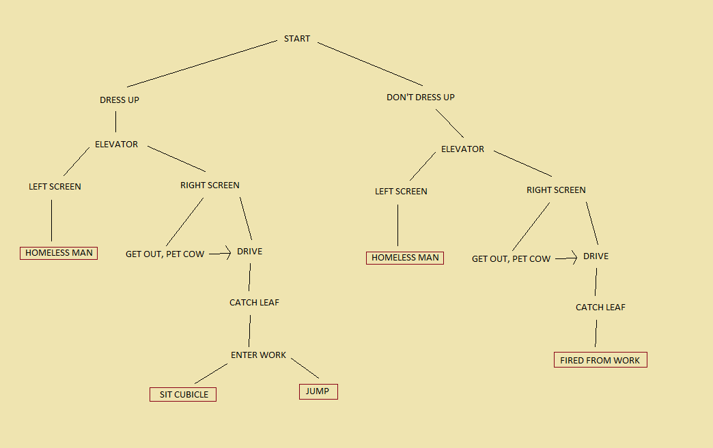

Overall DescriptionThe interaction of this story allows for the user to go at their own pace, yet gives nudges and hints at how to keep the story going. There are a few options in which variation occurs, for example in choosing to get dressed up or not, or petting the cow or not. In certain circumstances, the user can go left or right off of a screen to make a choice. The graphic quality is very minimalist, and overall black and white in color. There are a few elements here and there that have actuall color, to bring some life into the overall picture, but the theme of the story is very mundane, so the color choice is aligned heavily with that. The interaction feels very open despite not having a huge amount of paths. Having the choice to dress impact the story later down the line gives more feelings of mobility and options to the user. |
|
|  |
{START} We are first standing in a bedroom with some music playing. The only color in the scene that is not black and white is from a red flashing light that appears to be an alarm clock. At this point the user can hit the arrows to move the character left or right on the screen. As you go to the right edge of a screen, a new scene appears... In this new scene there is a strobing tv flashing multiple colors, but the rest of the scene is black and white still. Instead of going back to the bedroom where the wardrobe was, I decided to continue walking to the right and exit the frame to a new scene. It seems there is a choice of either going back and getting dressed, or continuing further without dressing up. {DRESS UP / DON'T DRESS UP} If we go back in to the room and dress up, the character is now wearing a suit, otherwise, the character stays in their woken up state. There are then multiple scenes to go through becore another choice is present. {ELEVATOR} After walking back through the scene with the tv again, we end up in a hallway, outside the apartment. Here you can use the space bar to call the elevator, and get in. On the elevator there is a lady who doesn't seem very friendly when using the space bar to interact. Now we end up outside the apartment building {LEFT SCREEN} If we head to the left of the apartment, we end up on a street with a homeless man sitting there. At the end of the frame there is a crosswalk stop hand in red, preventing the user from going any further that way. |
|
{HOMELESS MAN} If we hit space to interact with the homeless man, he claims he can take us somewher, then the fram shifts to a graveyard with our character and the homeless man standing, and we reach the end of a path for the story. {RIGHT SCREEN} If we go right, towards the P sign in blue for parking, we find ourselves in a car. {GET OUT / PET COW} If we get out of the car, and walk off either side of the screen, we end up in a large field beside a grazing cow, when we use space to interact, the character slowly reaches out and pets the cow. {DRIVE} If you had chosen to pet the cow, you can return back into the car, otherwise you can only drive off the screen to continue. {CATCH LEAF} When on the way into the building, you can try to catch an orange leaf that falls from the tree if you wait a few moments. {FIRED FROM WORK} If you chose to not dress up earlier at the start, the boss will fire you, and the story path will come to an end. {ENTER WORK} The character now gets told off by the boss for being late, and is told to go get to work at their cubicle. You can now go further to the right to reach your cubicle. {SIT CUBIBLE} AFter passing a few screens of other identical characters working at cubicles, you eventually reach an empty one among the mass workers. If you chose to sit with the space bar, the story path ends. {JUMP} If you decide not to sit at a cubicle, you can continue walking to the right to a green exit sign. You then end up on the roof, and if you walk to the edge and interact, the character will jump, ending the story path. |